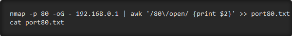

Crack Shadow Hashes After Getting Root on a Linux System
After gaining access to a root account, the next order of business is using that power to do something more significant. If the user passwords on the system can be obtained and cracked, an attacker can use them to pivot to other machines if the login is the same across systems. There are two tried-and-true password cracking tools that can accomplish this: John the Ripper and Hashcat.
Passwd & Shadow File Overview
A couple files of particular interest on Linux systems are the /etc/passwd and /etc/shadow files. The /etc/passwd file contains basic information about each user account on the system, including the root user which has full administrative rights, system service accounts, and actual users. There are seven fields in each line of /etc/passwd. A typical line looks something like this: msfadmin:x:1000:1000:msfadmin,,,:/home/msfadmin:/bin/bash The first field is the user's login name. The second field traditionally contained an encrypted password, but nowadays (unless you get extremely lucky) it merely contains the letter "x," to denote that a password has been assigned. If this field is blank, the user does not need to supply a password to log in. The third field is the user ID, a unique number assigned to the user, followed by the group ID in the fourth field. The fifth field is typically the full name of the user, although this can also be left blank. The sixth field is the user's home directory, and finally, the seventh field is the default shell, usually set to /bin/bash. The /etc/shadow file contains the encrypted passwords of users on the system. While the /etc/passwd file is typically world-readable, the /etc/shadow is only readable by the root account. The shadow file also contains other information such as password expiration dates. A typical line in /etc/shadow will look like this:
Using Nmap for Local Networks
Running an Nmap scan is often the best way to discover the size of the network and the number of devices that are connected to it. Running a "fast" Nmap scan (-F) on a network range can produce a list of all of the IP addresses belonging to active hosts on the network, plus some extra information.

The data provided, combined with some basic information about services a device is running, can be used by itself as a list of targets for other hacking tools, but the capabilities of Nmap go far beyond simple host discovery.
The amount of info on a local network an Nmap scan can gather is impressive, including the MAC address and manufacturer of connected devices, the operating system a device is using, and the version of any services that are running on the device. Once you know how many devices are on the network and roughly what they are, the next step is to scan and examine devices of interest on the network.
Another key function of Nmap is to allow for port scanning of either individual devices or ranges of IP addresses including many devices. This allows an attacker to learn the minute details of a device they have discovered on a network, including information about ports open and services running. Ports are gateways that another device can connect through, so finding a bunch of services running on open ports can be a huge benefit to a hacker, especially if one of them has a version that is out of date and vulnerable.
Using Nmap for Remote Networks
In addition to scanning local networks, Nmap can also show information about remote networks as well. In fact, you can run Nmap against a website you want to examine, and it will parse it and retrieve the IP address associated with that web domain.
After grabbing the IP address and taking note of the port numbers that are open, further Nmap scans can reveal the operating system (-O) being used to host a remote website.
Finally, we can even learn about the versions of software running on the ports we find open. If we see one that is vulnerable to a known attack, this could make our job on the network much easier. Using the IP address we discovered earlier, we can run another scan with -sV that reveals that httpd 2.0 is being used on the target machine.
These details combined — the IP address of a remote website or server, the operating system running on the device, and the version of any application running on open ports we discover — is everything a hacker needs to get started attacking devices on a network.
What You'll Need
To use Nmap, you'll need a system that supports it. Fortunately, Nmap is cross-platform and works on Windows, Linux, and macOS, and comes preinstalled on many systems. If you don't have it, it's easy to install.
You'll also need a network to connect to and scan to try these techniques, but be aware that scanning is often seen as a prelude to an attack and may be met with increased scrutiny. What this means is that if you have a job that monitors suspicious behavior, scanning their entire network is a great way to gain attention.
Step 1 : Configure Nmap to Scan a Single Target
To run a basic scan, we can identify an IP address of interest to run the scan against. One of the most basic but informative scans is to run Nmap, specify a target IP address, and then type -A to enable OS detection, version detection, script scanning, and traceroute.
Even against a single target, a basic scan can yield a lot of information. Here, we simply ran the scan on the IP address for WonderHowTo.com. This can be run against a device on your local network, like a router, or a remote server, like the one hosting WonderHowTo.com.
Step 2 : Calculate the Subnet & Scan a Range to Discover Devices
In order to identify other devices on a local network, it's useful to calculate the subnet range. This is the range of possible IP addresses given out to devices on a network, and knowing it allows you to scan through all the possible IP addresses a device on the network could have.
A handy tool to do this for you is IPcalc. This tool will take your IP address (which is easy to find by typing ifconfig or ip a in a terminal window) and calculate the subnet range based on it. Doing so will give you a number like "192.168.0.0/24," which specifies a range of IP addresses. In the example below, the subnet is calculated as 127.0.0.0/24.
In order to run a scan including information about the services running on devices we find, we can open a terminal window and type the following command, adding in your network range where I use "172.16.42.0/24" as an example. The scan is a little slow, so you can also use an -F flag instead of the -A to do a faster scan of the most common ports.
We're basically running Nmap with no arguments except the -A flag. We should expect to see an output like above, showing discovered devices and the services running on them.
Another handy tool for network discovery is arp-scan, which can sometimes show devices that Nmap misses. We can use Nmap to conduct an ARP scan with the -PR request, which is quite fast and aggressive at bringing back online hosts.

Step 3 : Create a Target List of Active Hosts
Now we can calculate all the possible IP addresses on the local network and discover them either with a -F (fast) scan, by running Nmap with no arguments but the -A flag for a slower scan with more info, or with a -PR scan capable of quickly sweeping a local network for active hosts.
Finally, if you want to create a TXT file of hosts you discovered, you can use the command seen below to build a list to avoid needing to scan the entire network each time we run a subsequent scan. For instance, to scan for devices with a port 80 open and save them to a list, we can use some Linux tools and the -oG "greppable output" flag to help us cut through the output Nmap provides.
By running nmap -p 80 -oG - 192.168.0.0/24 — with the network range substituted for yours — you can add | awk '/80\/open/ {print $2}' >> port80.txt to output the IP addresses belonging to discovered devices to a TXT file called "port80.txt."
Here, the awk command is looking for lines containing the port number and the result "open," with the second string in each line (in this case, the IP address) saved by the cat command to a new file called port80.txt
Step 4 : Identify the Operating System on Discovered Devices
One of the most helpful things to know about a device we discover on a network is the operating system it's running. Here, we can take the TXT target list we populated in the previous step and run an operating system scan, which requires root privileges. We can use the -O flag to run an operating system scan, and the -iL flag to tell Nmap we want to read from a TXT file of target hosts.

This tactic allows us to get as much information as possible about the operating system from whatever list of targets we want to run it against, whether internal network targets or a list of website IP addresses.
The next step is discovering the versions of the applications running on open ports. This may show us a port that is running software that is out of date and has a known vulnerability. To run this scan, you can use the -sV flag against a target.
Here, we've found some very specific information about our host, allowing us to potentially identify an attack against the software listening behind the port.
Step 5 : Advanced Scans & Workarounds
There may be some circumstances where you're having a difficult time scanning a network because the ping sent by Nmap are dropped by a firewall on the router. This can make it look like no devices are up, when you know they are. To avoid this, you can include the -Pn flag, which will drop the ping and sometimes allow you to connect directly to devices and get a response.
If you're scanning on a network you don't want to be detected on, you can perform a decoy scan with the -D flag to make it more difficult to detect who is conducting the scan on the network. An example would look like the command below, and requires root privileges.
If you need more information about what's happening, you can strike a key while the scan is progressing to get some information about how it's proceeding or add a -v to increase the verbosity (how much information the script gives). Generally, you can keep adding more v's to the -v according to how frustrated or angry you get to learn more information about what's happening.

Here, we can see the reason reported for the port 80 being up, allowing us to delve deeper into what parts of a scan a device may be replying to or ignoring. Be warned, you will see everything the scan is doing, and this can produce a lot of output on a complicated scan.
Nmap Lights Up the Dark
Finding your way around a network for the first time can be a harrowing experience for a beginner, whether you're learning about network exploitation for the first time or simply trying to find your router.
Keep in mind, while networks scans are fine (and a great idea) to run on your own network to see what's connected, this kind of scan may not be welcome on your work network or another network you don't own. If your employer looks for suspicious behavior on their networks, extensively scanning can be easily interpreted as the threatening behavior if you have no good reason to be performing the scan.
One of the most powerful things about Nmap is that it's scriptable with options like -oG and can be used to feed into other tools, so if you've ever imagined building a tool that needs to be aware of other devices on the same network, Nmap might be just what you're looking for.